PKKK/300/UP/011 Pengendalian Alat Shimadzu HPLC (Prominence-i LC-2030C 3D)
- 🔑 Kredensial Akses: Passcode pada panel LCD mesin ialah 00000. Pada paparan LabSolutions, User ID ialah
Admindan kata laluan dibiarkan kosong. - 🔄 Auto Purge Wajib: Lakukan Auto Purge setiap kali pelarut ditambah atau ditukar jenis bagi menyingkirkan buih udara dan menghalang kerosakan pam/turus.
- 🧪 Intermediate Flushing: Apabila menukar pelarut yang tidak larut campur secara langsung atau peralihan dari buffer ke organik tinggi, wajib bilas saluran dengan larutan perantaraan (Intermediate: Air Suling 90% : MeOH 10%).
- 📈 Penstabilan Garis Dasar: Klik butang
Plotsekurang-kurangnya selama tempoh satu running time sehingga garis dasar (baseline) dan tekanan stabil (RSD < 2%) sebelum klikStopdan memulakan suntikan sampel. - 🧼 Protokol Pencucian Shutdown: Sekiranya menggunakan fasa bergerak berasid/buffer, bilas kolum dengan 90–95% air : 5–10% organik selama 30 minit, diikuti 100% organik (30 minit), dan disimpan dalam 70% organik : 30% air (15 minit).
|
NPRA PUSAT KAWALAN KUALITI |
ARAHAN KERJA: PENGENDALIAN ALAT SHIMADZU HIGH PERFORMANCE LIQUID CHROMATOGRAPHY (PROMINENCE-I) | |
| No. Dokumen: PKKK/300/UP/011 | Terbitan / Semakan: Terbitan 4 Semakan 0 | |
| Tarikh Kuatkuasa: 10 April 2026 | Bahagian / Unit: SPPK · Unit Penyaringan | |
0.0 SEJARAH PINDAAN & SEMAKAN
| Terbitan | Semakan | Ditulis Oleh | Disemak Oleh | Diluluskan Oleh | Tarikh Kuatkuasa |
|---|---|---|---|---|---|
| 1 | 0 | Joanne Ong Yen Nee | Lim Wen Jun | Wan Nurul Aina Mior Abdullah | 2 Jan 2019 |
| 2 | 0 | Sharifah Arina Syed Mhd Hanafiah | Ooi Suat Hong | Wan Nurul Aina Mior Abdullah | 10 Feb 2020 |
| 2 | 1 | Sharifah Arina Syed Mhd Hanafiah | Ooi Suat Hong | Wan Nurul Aina Mior Abdullah | 15 Dis 2020 |
| 3 | 0 | Nur Aziah Mohd Rasali | Ooi Suat Hong | Wan Nurul Aina Mior Abdullah | 1 Nov 2022 |
| 3 | 1 | Joanne Ong Yen Nee | Ooi Suat Hong | Nur Aziah Mohd Rasali | 1 April 2024 |
| 3 | 2 | Tan Lu Yi | Ooi Suat Hong | Ida Syazrina Ibrahim | 1 Julai 2025 |
| 4 | 0 | Nurul Nadiah Noh | Tan Lu Yi | Ida Syazrina Ibrahim | 10 April 2026 |
Perincian Pindaan & Catatan Log Sejarah Dokumen ▸
Pindaan No. Dokumen daripada PKKK/300/UAT/012 kepada PKKK/300/UP/011 (selaras penyelarasan Unit Penyaringan).
Kemaskini tarikh kuatkuasa kepada 10 April 2026.
Penambahan perenggan 6.4 menerangkan perihal penstabilan suhu (Thermal Equilibration).
Penambahan perenggan 6.5 menerangkan perihal pemerhatian PDA detector dan pemantauan garis dasar.
Mengemaskini perenggan 5.3, jawatan Penolong Pegawai Farmasi ditukar daripada U36 / U32 kepada U7 / U6.
Pindaan No. Dokumen PKKK/300/HMS/032 kepada PKKK/300/UAT/012.
Pindaan peranan Ketua Subunit / Pegawai Bertanggungjawab pada ruangan Tanggungjawab kepada Ketua Unit / Pegawai Bertanggungjawab.
Pindaan ‘pengujian produk tradisional, suplemen kesihatan dan kosmetik’ kepada ujian penyaringan campurpalsu pada ruangan Tujuan dan Skop.
Prosedur ini merupakan dokumen baru selaras dengan usaha menaiktaraf pensijilan institusi ke versi ISO 9001:2015 dan penamaan semula nama institusi daripada BPFK kepada NPRA.
Kemaskini peranan Ketua Subunit / Pegawai Bertanggungjawab dan Penolong Pegawai Farmasi.
1.0 TUJUAN
Untuk memastikan langkah-langkah yang terlibat dalam proses pengendalian alat Shimadzu High Performance Liquid Chromatography (Prominence-i) untuk ujian penyaringan campurpalsu dijalankan dengan betul, tepat, dan selamat mengikut standard kualiti ISO/IEC 17025.
2.0 SKOP
Prosedur ini hendaklah digunapakai oleh semua kakitangan Unit Penyaringan untuk mengendalikan alat Shimadzu HPLC (Prominence-i LC-2030C 3D) bagi ujian penyaringan campurpalsu produk tradisional, suplemen kesihatan, dan kosmetik.
3.0 DEFINISI
4.0 CARTA ALIRAN
Tiada carta aliran formal berasingan untuk prosedur ini. Ringkasan visual alur kerja makmal dipaparkan pada bahagian atas arahan kerja ini (Visual Workflow Timeline: Hidupkan Alat ➔ Method Settings ➔ Auto Purge & Flush ➔ Plot Baseline ➔ Single/Batch Run ➔ Shutdown & Column Care).
5.0 TANGGUNGJAWAB
6.0 PROSEDUR PENGENDALIAN ALAT SHIMADZU HPLC
Pastikan bekalan kuasa utama, UPS, dan komputer pengawal disambungkan dengan baik, kemudian hidupkan suis utama di dinding.
Tekan suis kuasa pada panel hadapan instrumen HPLC Shimadzu Prominence-i. Tunggu proses self-test dan inisialisasi modul selesai.
Pada panel LCD instrumen, masukkan kata laluan keselamatan: 00000, kemudian tekan OK.
1. Pada desktop komputer, klik dua kali pada ikon “LabSolutions”.
2. Pada paparan login, User ID: Admin dan ruangan Password dibiarkan kosong. Klik “OK”.
3. Dalam menu utama LabSolutions, klik “Instrument” dan seterusnya pilih “LC-2030C 3D” untuk membuka tetingkap operasi Real-Time Analysis.
▹ Membuka fail method sedia ada: Klik File > Open Method File dan pilih kaedah yang dikehendaki.
▹ Mencipta fail method baharu: Klik File > New Method > Method Settings untuk membuka tetingkap Method Editor.
1. Mode: Pilih Low Pressure Gradient (untuk sistem 4 injap/valve LPGE).
2. Total Pump Flow: Isikan kadar aliran mengikut kaedah analisis (cth: 1.0000 mL/min).
3. Solvent Concentration: Isikan peratusan pelarut mengikut kaedah (cth: Solvent B Conc: 70% MeOH ; Solvent C Conc: 30% H2O).
4. Pressure Limits: Isikan had tekanan maksimum Pump A (cth: 250 bar).
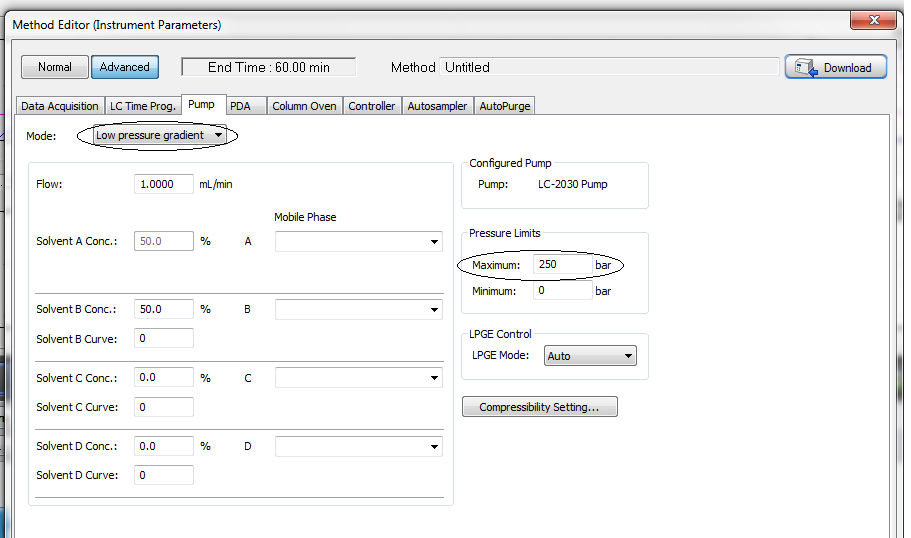
1. Tandakan Autosampler.
2. Cooler Temperature: Suhu ruang sampel boleh ditetapkan jika kaedah memerlukan kawalan suhu (cth: 15 °C atau 5 °C).
3. Rinse Settings: Setkan Rinsing Speed (35 µL/sec), Rinsing Volume (500 µL), dan Rinse Mode (Before and after aspiration).
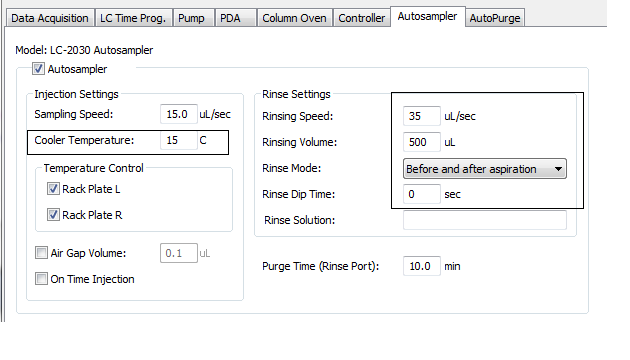
1. Tandakan Column Oven sekiranya kaedah analisis memerlukan pemanas suhu kolum (heating).
2. Oven Temperature: Tetapkan suhu oven kolum mengikut kaedah yang ditetapkan (cth: 40 °C).
3. Temperature Limit: Pastikan had suhu maksimum disetkan (cth: 90 °C). Amaran: Jangan set suhu melebihi 80–85 °C melainkan disyorkan khusus oleh pengeluar turus.
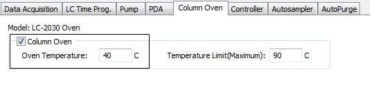
1. Wavelength: Setkan Start Wavelength dan End Wavelength berdasarkan kaedah (cth: 190 nm hingga 800 nm).
2. Cell Temperature: Tandakan Cell Temperature mengikut suhu column oven (cth: 40 °C).
3. Syarat Suhu Sel: Sekiranya suhu column oven > 60 °C, setkan Cell Temperature sebagai 60 °C. Sekiranya pemanas column oven tidak digunakan, Cell Temperature tidak perlu ditandakan.
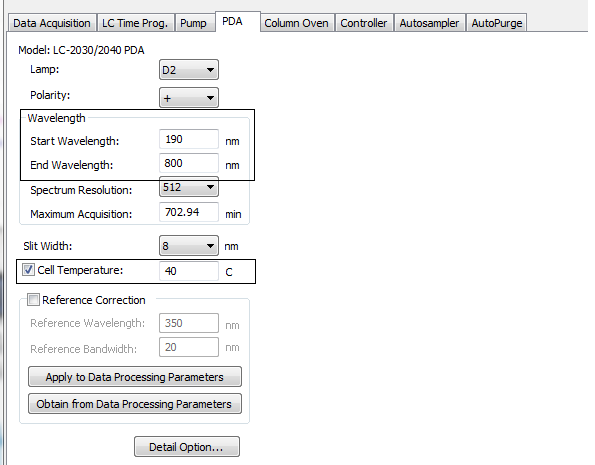
1. LC Stop Time: Isikan masa berhenti analisis (LC stop time) dan klik “Apply to All acquisition time”.
2. Sekiranya masa analisis akhir belum diketahui, biarkan dalam keadaan Default sehingga masa elusi puncak diperolehi.
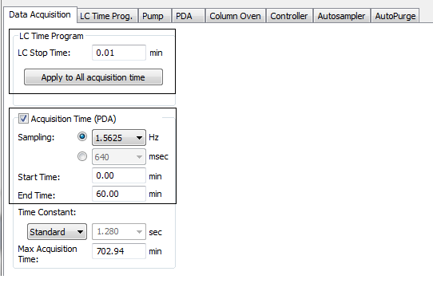
Sekiranya kaedah adalah Isokratik (tiada perubahan kecerunan elusi / non-changeable gradient), hanya baris pertama sahaja yang diisikan dengan arahan Controller Stop pada masa (Time) yang sama dengan LC Stop Time.
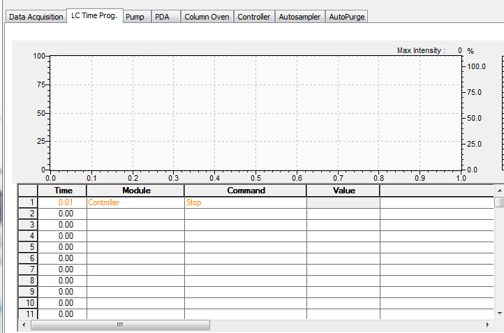
1. Sekiranya kaedah Gradient (Changeable Gradient) digunakan, setiap baris mewakili satu arahan langkah perubahan fasa bergerak mengikut masa (Time, Module: Pumps, Command: Solvent B Conc, Value).
2. Sahkan profil elusi dengan klik butang “Draw curve” untuk melihat graf kecerunan.
3. Prinsip Rekalibrasi: Setiap kali kaedah changeable gradient digunakan, komposisi pelarut mestilah diprogramkan kembali ke setting asal (cth: Composition B = 30% pada minit akhir sama seperti minit 0) bagi mengelakkan pergeseran masa penahanan (retention time shift) pada suntikan seterusnya.
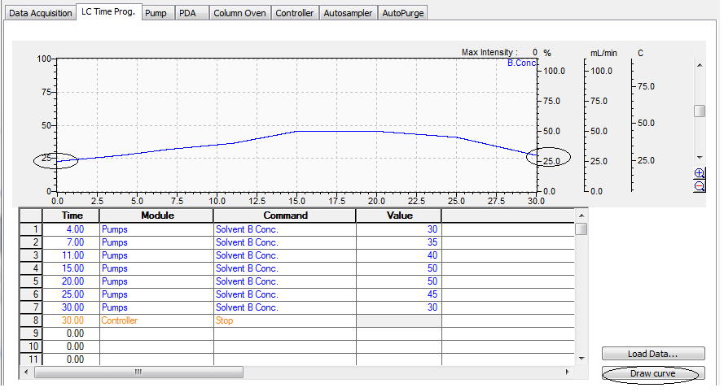
Sistem Auto Purge mengeluarkan buih udara dalam saluran pelarut bagi mengelakkan gelembung memasuki pam dan turus. Auto Purge wajib dijalankan sekiranya: (a) Pelarut ditambah ke dalam botol pelarut, atau (b) Pelarut bertukar jenis.
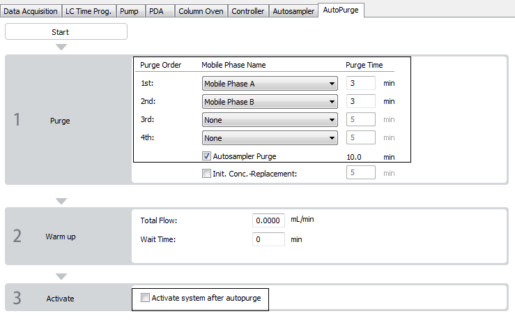
1. Pastikan sistem ditutup dahulu (Flow = 0 mL/min) dan tunggu bacaan tekanan (Pressure) jatuh ke sifar.
2. Keluarkan tiub saluran pam yang berkenaan dan masukkan ke dalam botol Intermediate Solution (Air Suling : MeOH / ACN).
3. Jalankan purging. Selepas itu, alihkan saluran pam ke dalam botol pelarut sasaran dan ulangi purging.
4. Nota: Pilihan Activate system after autopurge TIDAK ditandakan sekiranya melibatkan larutan Intermediate. Setelah kaedah ditetapkan, klik Save Method File.
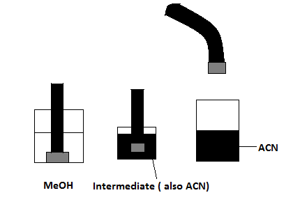
1. Buka fail method yang telah disahkan.
2. Klik ikon “Download” (atau “Download and Close”) untuk memuatkan parameter kaedah ke dalam memori perkakasan HPLC.
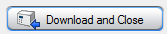
3. Pada bar alat atas, klik ikon Auto Purge untuk memulakan proses penyingkiran buih udara secara automatik.
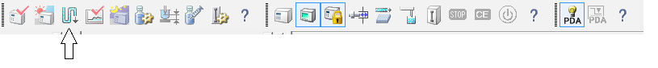
4. Tunggu sehingga proses Auto Purge selesai (status bar menunjukkan 100% dan dialog ditutup).
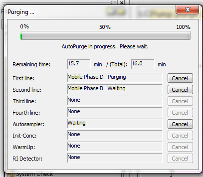
1. Hidupkan aliran pam fasa bergerak dengan klik pada ikon “Instrument On/Off”.
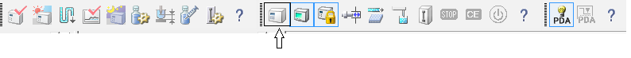
2. Semakan Aliran & Tekanan: Pada tetingkap Real Time Window di sebelah kanan, perhatikan jadual status instrumen. Apabila pam sedang beroperasi, bacaan tekanan (Pressure / Press) akan tertera (cth: 2 bar atau nilai operasi biasa turus). Sekiranya nilai tekanan ialah sifar “0”, ini menunjukkan pam tidak berjalan.
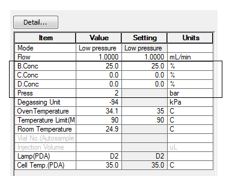
Pantau paparan status suhu oven kolum dan sel PDA sehingga kedua-dua bacaan suhu mencapai nilai sasaran yang ditetapkan dalam kaedah dan stabil sepenuhnya sebelum meneruskan ke langkah seterusnya.
1. Garis dasar (baseline) sistem hanya boleh dipantau sekiranya butang “Plot” di bahagian atas tetingkap diklik.
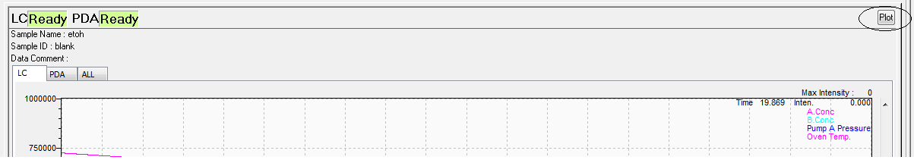
2. Jalankan pemantauan Plot sekurang-kurangnya selama tempoh satu running time kaedah pengujian spesifik yang hendak dijalankan. Pastikan kadar aliran fasa bergerak menghasilkan garis dasar yang mendatar, stabil, dan tekanan pam konsisten.
3. Sebelum suntikan sampel dimulakan, klik butang “Stop” untuk menghentikan mod Plot.
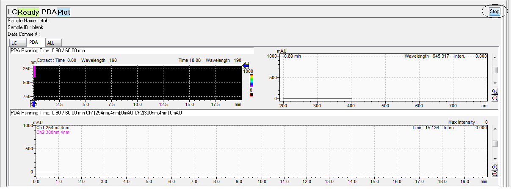
Untuk memerhati kromatogram pada panjang gelombang khusus secara RealTime:
1. Klik kanan pada kawasan PDA Chromatogram dan pilih “Display Settings...”.
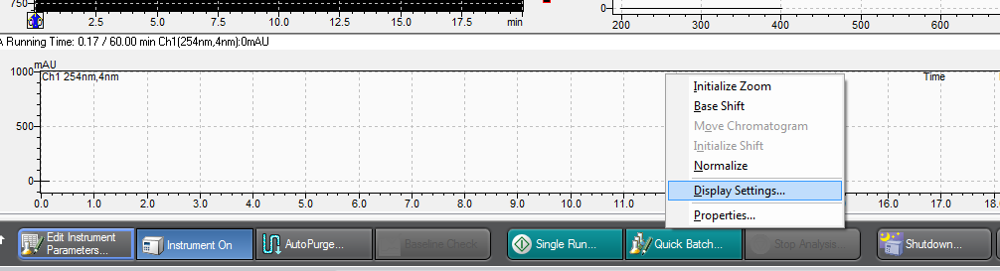
2. Pada tab PDA, tandakan saluran (Channel) dan masukkan panjang gelombang sasaran (cth: Ch1: 254 nm, Ch2: 300 nm). Klik “OK”.
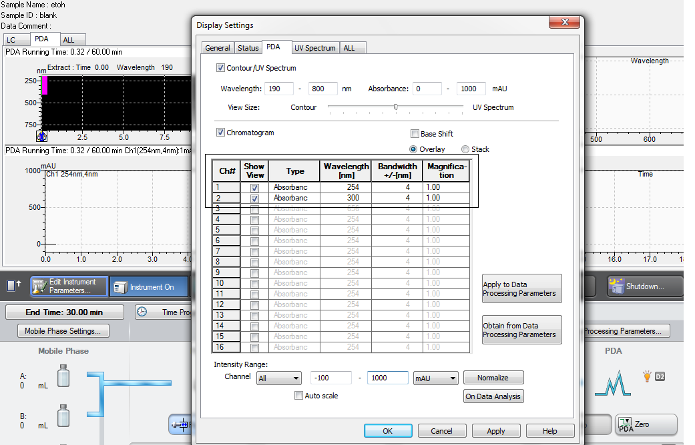
3. Kromatogram bagi gelombang yang dipilih kini akan dipaparkan secara langsung pada skrin pemantauan.
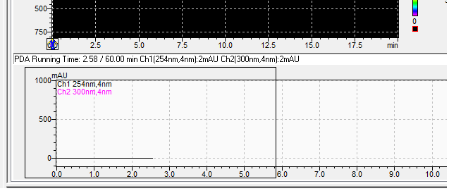
1. Pada bar pembantu di sebelah kiri (Assistant Bar), klik ikon “Single Run”.
2. Isikan medan maklumat perolehan data dalam dialog Single Run:
.lcd).Tray 1 = L1, Tray 2 = L2, Tray 3 = R3, Tray 4 = R4.3. Klik “OK” untuk memulakan suntikan tunggal secara serta-merta.
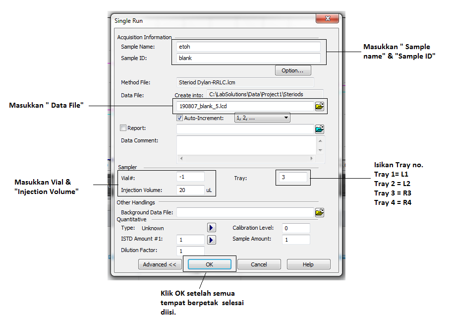
1. Pada menu utama atau Assistant Bar di sebelah kiri, klik ikon “Real Time Batch”.
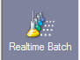
2. Untuk menambah baris suntikan dalam jadual batch: Klik kanan pada jadual batch dan pilih “Add Row...”.
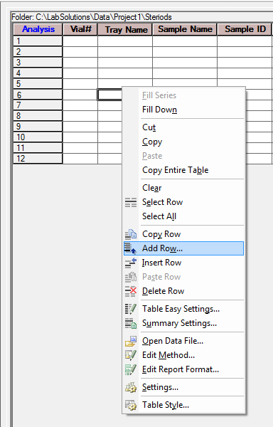
3. Lengkapkan setiap baris jadual turutan suntikan batch:
.lcm)..lcd).4. Simpan fail jadual batch (.lcb) dan klik “Start Real Time Batch” untuk memulakan siri suntikan automatik.
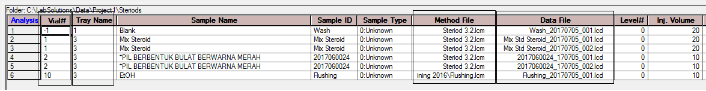
1. Jalankan pembilasan menggunakan 100% Pelarut Organik (Acetonitrile atau Methanol) selama 30 minit untuk mencuci sisa analit daripada turus.
2. Setelah itu, bilas semula menggunakan 60–70% Pelarut Organik : 40–30% Air selama 15 minit sebelum sistem disimpan.
1. Bilas turus menggunakan 90–95% Air : 10–5% Pelarut Organik (Acetonitrile / Methanol) selama 30 minit untuk melarutkan dan mengeluarkan semua sisa garam penimbal.
2. Diikuti dengan 100% Pelarut Organik (Acetonitrile / Methanol) selama 30 minit untuk membersihkan turus sepenuhnya.
3. Akhir sekali, bilas selama 15 minit menggunakan 70–60% Pelarut Organik : 30–40% Air bagi penyimpanan turus jangka masa panjang.
3. Mematikan Sistem: Setelah semua pembilasan selesai, klik ikon “Instrument ON/OFF” pada bar alat atas untuk mematikan pam dan lampu pengesan.
4. Tutup perisian Real-Time Analysis LabSolutions, tutup suis utama mesin HPLC, dan catatkan penggunaan dalam log rekod makmal.
*Nota Kolum: Tatacara shutdown ini adalah khusus untuk turus fasa terbalik (reversed-phase column seperti C18). Bagi kolum jenis lain (cth: HILIC, Normal Phase, Ion-Exchange), sila semak manual pengeluar turus terlebih dahulu.
7.0 REKOD KUALITI
| No. Borang / Dokumen | Tajuk Dokumen Rekod Kualiti | Lokasi Simpanan | Tempoh Simpanan |
|---|---|---|---|
| PKKK/300/UP/004 | Rekod Penyelenggaraan Alat Shimadzu High Performance Liquid Chromatography (Prominence-i) | Buku Log Bersebelahan Instrumen HPLC Prominence-i / Unit Penyaringan | Sepanjang Hayat Peralatan (Life of Instrument) |
8.0 LAMPIRAN (GALERI RAJAH & TANGKAPAN SKRIN PERISIAN LABSOLUTIONS)
Koleksi 25 tangkapan skrin rasmi perisian LabSolutions dan tatacara pengendalian HPLC Shimadzu Prominence-i LC-2030C 3D:
9.0 RUJUKAN DOKUMEN
| No. Dokumen / Manual | Tajuk Dokumen Rasmi & Skop Kaedah | Pautan Pantas |
|---|---|---|
| Manual Pengilang | Fundamental & Operation of Shimadzu High Performance Liquid Chromatography (Prominence-i LC-2030C 3D) | Manual Fizikal Makmal |
| PKKK/300/UP/001 | Proses Persampelan (Ujian Penyaringan) | Buka SOP → |
| PKKK/300/UP/021 | Identifikasi Steroid 8-Mix dalam Produk Tradisional menggunakan HPLC | Buka SOP → |
| PKKK/300/UP/022 | Identifikasi Anti Diabetik dalam Produk Tradisional menggunakan HPLC | Buka SOP → |
| PKKK/300/UP/024 | Identifikasi Diuretik dalam Produk Tradisional menggunakan HPLC | Buka SOP → |
| PKKK/300/UP/025 | Identifikasi Proton Pump Inhibitor (PPI) dalam Produk Tradisional menggunakan HPLC | Buka SOP → |
| PKKK/300/UP/026 | Identifikasi Anti-hipertensi dalam Produk Tradisional menggunakan HPLC | Buka SOP → |
| PKKK/300/UP/027 | Identifikasi Domperidone dalam Produk Tradisional menggunakan HPLC | Buka SOP → |
| PKKK/300/UP/028 | Identifikasi Antikolesterol dalam Produk Tradisional menggunakan HPLC | Buka SOP → |
| PKKK/300/UP/031 | Penentuan Lovastatin dalam Produk Tradisional menggunakan HPLC | Buka SOP → |
| PKKK/300/UP/032 | Identifikasi Dopamine dalam Produk Tradisional menggunakan HPLC | Buka SOP → |
| PKKK/300/UP/033 | Identifikasi Minoxidil dalam Produk Tradisional menggunakan HPLC | Buka SOP → |
| PKKK/300/UP/035 | Identifikasi Tretinoin dalam Produk Tradisional menggunakan HPLC | Buka SOP → |
| PKKK/300/UP/040 | Penetapan Kuantitatif Lovastatin dalam Monascus Purpureus menggunakan HPLC | Buka SOP → |
| PKKK/300/UP/050 | Screening of ID Hydroquinone in Cosmetic Products by HPLC | Buka SOP → |
| PKKK/300/UP/051 | Determination of Hydroquinone in Cosmetics by HPLC | Buka SOP → |
| PKKK/300/UP/052 | Screening of Clindamycin in Cosmetic Products by HPLC | Buka SOP → |
| PKKK/300/UP/053 | Identification & Quantitation of Tretinoin in Cosmetic Products by HPLC | Buka SOP → |
| PKKK/300/UP/054 | Identification & Quantitation of Parabens in Cosmetic Products by HPLC | Buka SOP → |
| PKKK/300/UP/056 | Identification of Steroids in Cosmetic Products by HPLC (ACM 007) | Buka SOP → |
| PKKK/300/UP/060 | Screening of Non-Steroidal Anti-Inflammatory Drugs (NSAIDs) in Cosmetics by HPLC | Buka SOP → |
| PKKK/300/UP/061 | Identification & Determination of p-phenylenediamine in Hair Dye by HPLC | Buka SOP → |